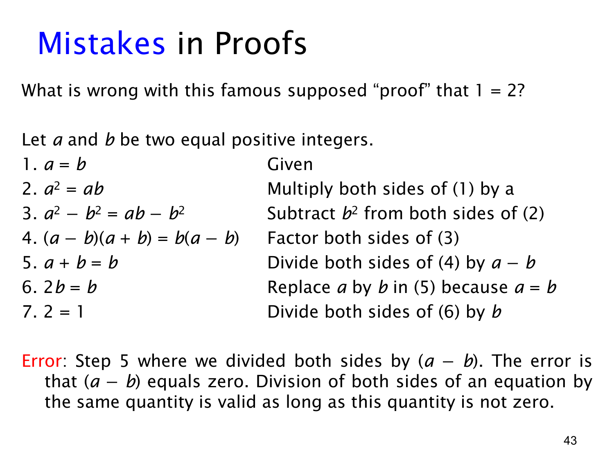

L1.3 · 第 43 页讲解原文
查看这一页课件

伪证明“1=2”错在哪里
这页展示一段看似逐行有理由、最后却得到荒谬结论的“证明”。设 a,b 是相等的正整数，所以 a=b>0。从 a=b 出发，乘以 a 得 a2=ab；两边减去 b2，再因式分解，可得
(a−b)(a+b)=b(a−b).
到这里的等式都合法。问题出在第 5 步：把两边的 (a−b) “约掉”，写成 a+b=b。因为一开始就设 a=b，所以 a−b=0；约掉它等于两边除以零，而除以零没有定义。事实上，第 4 步在此条件下只是 0=0，它对 a+b 与 b 之间没有提供可消去的信息。
后面的第 6 步代入 a=b 得 2b=b，第 7 步再除以正整数 b 得 2=1。第 7 步的除法本身符合 b>0 这个非零条件，但它继承了第 5 步产生的错误等式，因此整条推导仍然无效。最早出错的一步才是定位伪证明的关键。
一般地，从 cx=cy 推到 x=y 的消去律需要 c=0；当 c=0 时，原式只是 0=0，无法说明 x 与 y 相等。检查证明时，凡是除法、取倒数、约分，都应先核对分母或被消去的因子确实不为零。